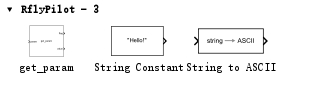
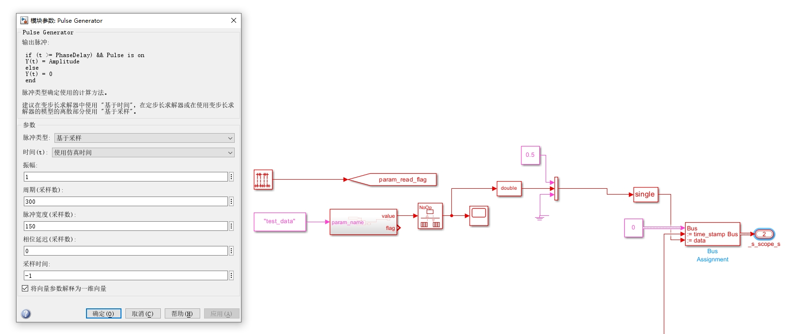
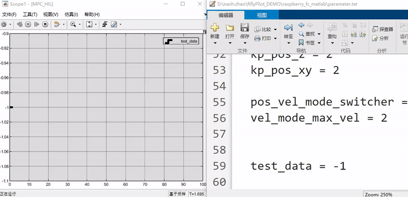

RflyPilot支持在线调参功能，允许在飞控运行时进行参数修改与更新。
MIL
解压工程文件中slib/rflypilotblock.zip，并添加到工程路径中，运行脚本slblocks.m，此时RflyPilot模块便被加载到Simulink中，此时打开MIL_HIL.slx模型文件，即可在“库浏览器”中看到相应的模块。相应的调用示例，读者可以参考RflyPilot_Model/debug_tools/ParamUpdate.slx文件，读者可以将改模块复制到MIL仿真模型中。
该参数模块在模型首次运行时将运行一次，读取相应字符串定义的参数，而后在param_read_flag的上升沿时将再次触发，继续读取参数，以实现参数更新的目的。

将parameter.txt拷贝到工程根目录下，模型在运行时将会从中读取参数。
设置get_param模块的采样周期为-1。并设置param_name为test_data。
现给param_read_flag脉冲信号，则将在脉冲的上升沿进行参数更新，最后显示到示波器中，如下图所示。

在仿真的过程中修改parameter.txt中的test_data数值，示波器中的数值会发生相应的变化，而变化周期与脉冲信号周期相同。

Tip
强烈建议开发者自行引入param_read_flag信号，比如由遥控器的开关触发，在修改完parameter.txt后，通过遥控器开关触发，这样的触发方式有利于降低参数更新模块对系统资源的占用，因为每个参数更新模块在每次参数更新时均会执行读操作，并且会遍历parameter.txt，如果只使用脉冲信号触发，比如会造成系统资源的极大浪费，同时可靠性不高。
SIH/HIL/EXP
参数更新模块同样可以运用在SIH/HIL模式和实验中。其使用方法与MIL差别不大，仅需将parameter.txt文件更新到RflyPilot飞控源码的config/parameter.txt中，在使用RflyPilotTools进行上传时，该文件会自动上传至RflyPilot飞控中。在此模式中，笔者强烈建议使用遥控器开关触发参数更新。